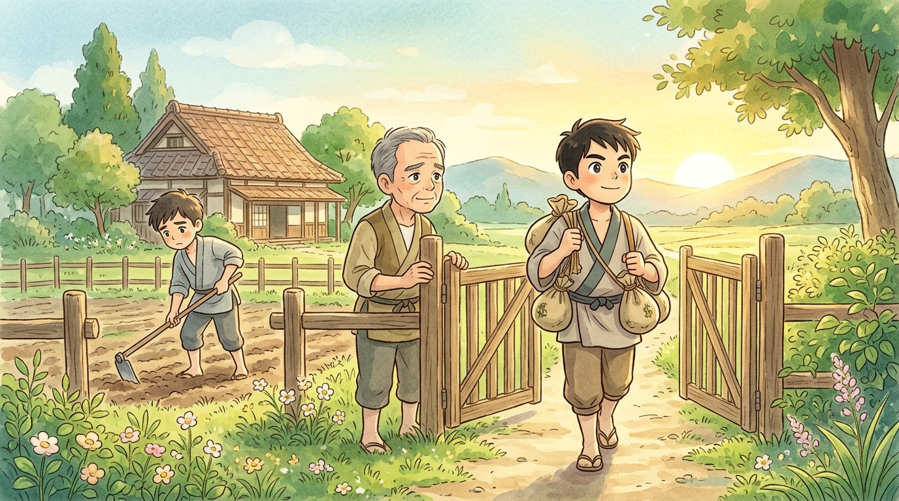
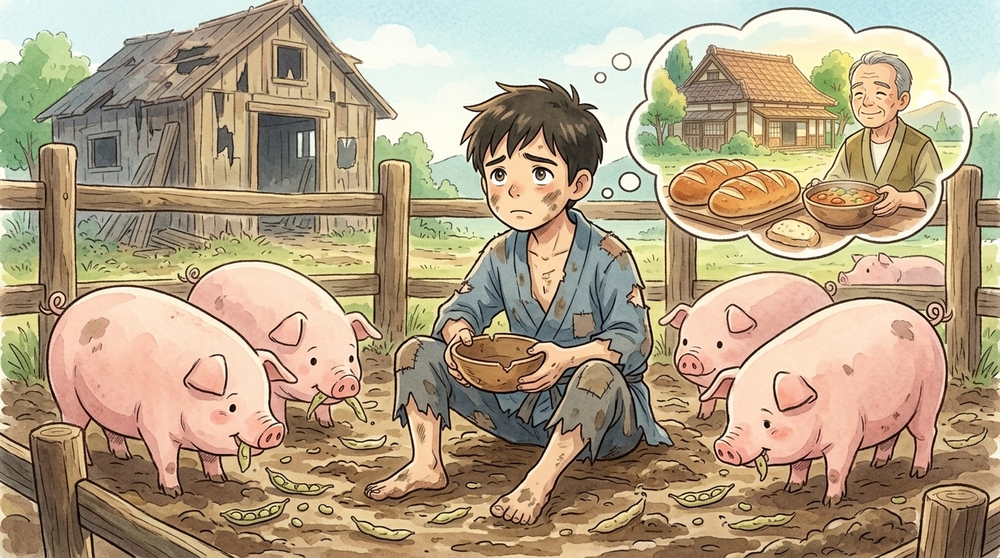
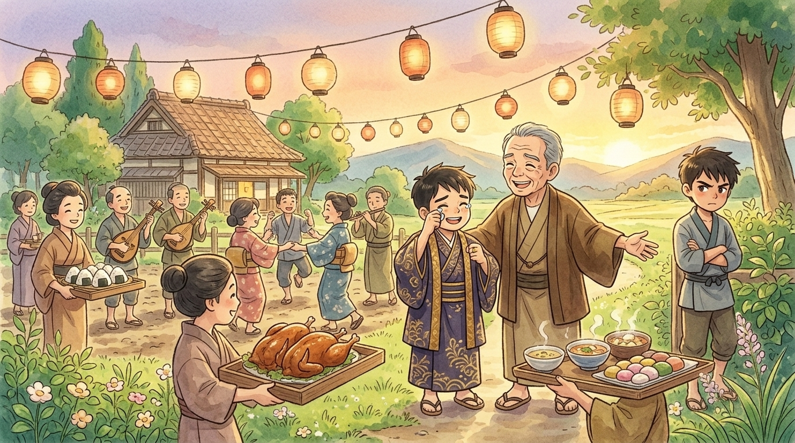

Two thousand years ago, Jesus told a story so good that people have never stopped telling it.1 Crowds of ordinary people — including plenty of folks who felt they'd messed up their lives — pressed in close to listen. This is the story they heard. Curtain up!
ACT ONE: "Give me my share"
There was once a father with two sons and a fine farm. One day the younger son came to his father and said the unthinkable:
Now, hold everything. In those days, a son received his inheritance when his father died. Asking for it early was like saying, "Dad, I wish you were already gone — I want your money more than I want you."2 Jesus' listeners must have gasped out loud. Surely the father would refuse! Surely there'd be thunder and shouting!
But this father — remember him, he's the hero — quietly divided up everything he owned, and gave the younger son his share. A few days later, the boy packed it all up and set off for a far country, without so much as a look back at the old man standing in the gate.
And in the far country? Oh, he had fun. He threw money around like confetti. Feasts every night! Friends everywhere! (Funny how many friends you have when you're paying.) The money answered every question — until the day the money ran out.

ACT TWO: The pig pen
Right on cue, a terrible famine hit the far country. Food prices soared. His "friends" vanished like morning mist. The boy who once feasted every night now took the only job he could find: feeding pigs.
For Jesus' listeners, this was the bottom of the bottom. Pigs were unclean animals that no respectable person in Israel would touch — a Jewish boy feeding pigs in a foreign land had fallen as far as anyone could imagine falling.3 And it gets worse: he was so hungry that the pigs' bean pods started looking delicious. Nobody gave him anything.
And there, sitting in the muck, stomach growling, the Bible says something wonderful: "he came to his senses."
"My father's hired workers have more bread than they can eat — and here I am, starving next to pigs. I'll go home. I'll tell him: 'Father, I have sinned against heaven and against you. I don't deserve to be called your son anymore. Just… let me be one of your hired workers.'"
He practiced that little speech all the long, dusty way home. Father, I have sinned… not worthy… hired worker… Over and over, mile after mile, growing more nervous with every step. Would his father slam the door? Make him beg? Say "I told you so" for the rest of his life?

ACT THREE: The father who ran
Here comes the greatest moment in the whole story. Listen: "While he was still a long way off, his father saw him." Still a long way off! You know what that means? It means the father had been watching the road. Day after day, month after month, shading his eyes against the sun, hoping.
And when he finally saw that thin, ragged, familiar figure on the horizon — the father did something that dignified older men in that world simply never did. He gathered up his robes… and he RAN.4
He ran down the road, threw his arms around his son's neck, and kissed him — dirt, pig smell and all. The son started his rehearsed speech: "Father, I have sinned against heaven and against you. I am not worthy to be called your son—" But before he could even get to the part about being a hired worker, his father was already shouting to the servants:

Robe, ring, sandals — each gift said the same thing: you are not a hired worker. You are my SON. You never stopped being my son. That evening the whole farm rang with music and dancing.
Epilogue: The brother in the yard
But one person stood outside in the dark, arms crossed: the older brother, home from a long day's work. "All these years I've obeyed you," he snapped at his father, "and you never threw ME a party. But when THIS son of yours wastes everything and crawls home — the best robe? A feast?!"
The father's answer is gentle, and it's really the story's second ending: "My son, you are always with me, and everything I have is yours. But we had to celebrate — your brother was lost and is found." Jesus left the story right there, hanging in the air. Would the older brother come in to the party? We're never told. It's as if Jesus turned to everyone listening — the mess-ups AND the rule-followers — and asked: will you?
Here's the secret of this story: the father is a picture of God. However far you've wandered, however badly you've messed up, the moment you turn around and head home, you'll find He's already running toward you. Saying sorry to God isn't the scary part of the story. It's the start of the party. 🎉